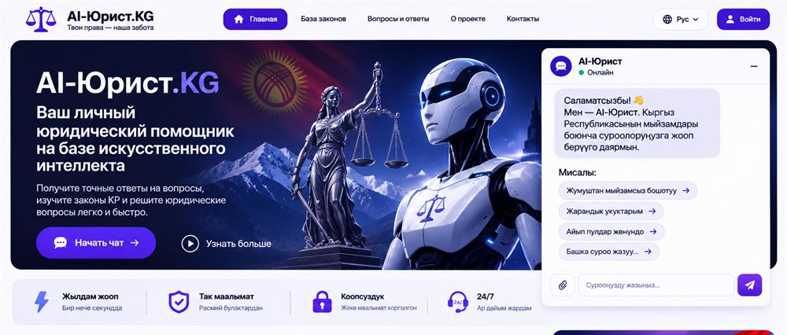

Работаю системным администратором и сопровождаю 1С в «Неман-Фарм» более года.
Учусь по направлению «Программное обеспечение» в ИГУ. Получил диплом колледжа ИГУ по специальности «программист-техник» и прошёл курс фронтенд-разработки в IT-академии JEBESOFT.
Самостоятельно изучаю кибербезопасность.
АдминистрированиеWindows, Linux и сетевые основы
Сопровождение 1СОпыт работы в «Неман-Фарм»
Разработка и ИБFrontend и самостоятельное обучение кибербезопасности
Современный маркетплейс по модели Wildberries с собственной визуальной идентичностью: каталог, поиск, корзина и карточки товаров для покупателей и продавцов.
React / Next.jsTailwind CSSPostgreSQLJWT

Дизайн-концепт интерфейсаИСКУССТВЕННЫЙ ИНТЕЛЛЕКТ
AI-Юрист.KG
Юридический помощник на основе ИИ для граждан Кыргызстана: отвечает на вопросы о законах простым языком, помогает найти нужную статью и поддерживает кыргызский и русский языки. Включает чат, базу законов и разделы по отраслям права.
ИИ-ответы носят справочный характер и не заменяют консультацию юриста.
ИИЧат-ботПраво КРКыргызский и русский язык
Профессиональный путь
Опыт
БОЛЕЕ 1 ГОДА
«Неман-Фарм»
Системный администратор и специалист по сопровождению 1С